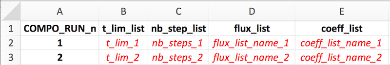

vignettes/vgn_07_sweep_steady.Rmd
vgn_07_sweep_steady.RmdFull documentation and tutorials can be found on the isobxr website.
The sweep_steady function is designed to allow the user to map the combined effects of two parameters over the final state of an isobxr box model.
The sweep_steady workflow can be found here.
The sweep_steady function is built as a 2 steps composite scenario.
The first run (run #1) is used to force the initial conditions of the second run. It is run once only.
The main purpose of this sweep_steady structure is:
In addition to the global isobxr master file, the sweep_steady function requires a sweep steady master file.
The sweep steady master file is the (xlsx) document containing all commands allowing sweep_steady function to compose a scenario of 2 runs.
The two parameters to be swept over run #2 are defined by user directly in the function input, in the R console.
The format of the sweep steady master file is the same as the compose master file and the sweep dynamic master file.
It is where the user sets the design of their 2 runs scenario to be swept:
The format of the sweep steady master file is standardized. The user is encouraged to comply with these standards, as described thereafter, otherwise there is a high probability for these functions to crash.
sweep_steady function inputs: [e.g., 0_SWEEP_STEADY_MASTER.xlsx ].sweep_steady function.The sweep steady master file contains the 5 following sheet strictly named as follows:

The sweep_steady function strictly requires a list of 2 successive runs.
Both of these runs should be successively described one by one on two rows of this sheet, with notably:
The user needs to define the two runs composing the 2 steps scenario.
ana_slvr).ana_slvr).sweep_steady function begins with a run #1 which final state defines a common initial state for all repeated run #2 sweeps is that it can allow the user to sweep the final state of a system in the course transient/dynamic state of run #2, being in a balanced or unbalanced system. This needs however to be designed with care as depending on the defined or forced parameters on run #2 vs. run #1, the continuity of the conditions of run #1 and run #2 is not certain. It is then advised to use the better suited sweep_dyn function described thereafter.
In addition to all the usual input parameters required for the sweep_steady function, the user has to define the two parameters to be swept.
There are 6 types of sweepable parameters (or that can be explored), which names are strictly defined as follows:
#> [1] "EXPLO_n_FLUX_MATRICES"
#> [1] "EXPLO_n_ALPHA_MATRICES"
#> [1] "EXPLO_1_SIZE"
#> [1] "EXPLO_1_DELTA"
#> [1] "EXPLO_1_ALPHA"
#> [1] "EXPLO_1_RAYLEIGH_ALPHA"This type of parameter allows to explore a series of flux lists as defined in isobxr master file.
data.frame(VALUES = c("flux_list_1", # vector of n strings of characters "...", "flux_list_i", "...", "flux_list_n"), EXPLO_TYPES = "EXPLO_n_FLUX_MATRICES") # stricly leave as such
The EXPLO_n_FLUX_MATRICES parameter will allow the sweep_steady function to sweep the effect of a series of flux lists (defining flux matrices and initial box sizes) on run #2 evolution.
The format of this data frame should be exactly as shown above.
The values are a vector of strings of characters containing the list of flux list names, that will be called from the isobxr master file
This type of parameter allows to explore a series of lists of coefficients as defined in isobxr master file.
data.frame(VALUES = c("coeff_list_1", # vector of n strings of characters "...", "coeff_list_i", "...", "coeff_list_n"), EXPLO_TYPES = "EXPLO_n_ALPHA_MATRICES") # stricly leave as such
The EXPLO_n_ALPHA_MATRICES parameter will allow the sweep_steady function to sweep the effect of a series of isotope fractionation coefficient lists (defining coefficient matrices) on run #2 evolution.
The format of this data frame should be exactly as shown above.
The values are a vector of strings of characters containing the list of coefficients list names, that will be called from the isobxr master file
This type of parameter allows to explore a range of sizes for a given box.
data.frame(BOXES_ID = "BOX_i", # 1 string of char SIZE_MIN = "min_sweep_value", # 1 numerical value SIZE_MAX = "max_sweep_value", # 1 numerical value SIZE_STEPS = "sweep_steps", # 1 numerical value EXPLO_TYPES = "EXPLO_1_SIZE") # stricly leave as such
The EXPLO_1_SIZE parameter will allow the sweep_steady function to sweep the effect of a range of box sizes for a given box on run #2 evolution.
The format of this data frame should be exactly as shown above.
This type of parameter allows to explore a range of delta values for a given box.
data.frame(BOXES_ID = "BOX_i", # 1 string of char DELTA_MIN = "min_sweep_value", # 1 numerical value DELTA_MAX = "max_sweep_value", # 1 numerical value DELTA_STEPS = "sweep_steps", # 1 numerical value EXPLO_TYPES = "EXPLO_1_DELTA") # stricly leave as such
This type of parameter allows to explore a range of alpha (coeff) values for a given flux.
data.frame(FROM = "BOX_i", # 1 string of char TO = "BOX_j", # 1 string of char ALPHA_MIN = "min_sweep_value", # 1 numerical value ALPHA_MAX = "max_sweep_value", # 1 numerical value ALPHA_STEPS = "sweep_steps", # 1 numerical value EXPLO_TYPES = "EXPLO_1_ALPHA") # stricly leave as such
This type of parameter allows to explore a range of incremental alpha values for a Rayleigh distillation model.
data.frame(XFROM = "Box_B", # B>C flux at numerator (strings of char) XTO = "Box_C", YFROM = "Box_A", # A>B flux at denominator (strings of char) YTO = "Box_B", AFROM = "Box_B", # resulting fract. coefficient (strings of char) ATO = "Box_C", ALPHA_0_MIN = "min_sweep_value", # value of incremental B>A coeff. (num.) ALPHA_0_MAX = "max_sweep_value", ALPHA_0_STEPS = "sweep_steps", EXPLO_TYPES = "EXPLO_1_RAYLEIGH_ALPHA") # stricly leave as such
The sweep_steady outputs are stored in the working directory.
The sweep_steady outputs are structured as shown in the full package documentation.
The outputs of the sweep_steady can be plotted using the shinobxr_app function.
The shinobxr_app function launches an interactive html app allowing to edit and export graphical representation of the model runs.
More on the use of the shinobxr_app function can be found on the Shiny app page.
Sweeping two fractionation coefficients in a 3-boxes balanced open system.
Here:
No forcings are applied.
To do so, the sweep_steady function can be used as follows:
workdir <- workdir_ABC # isobxr and compo master file work. dir. SERIES_ID <- "ABC_sweep_steady_demo1" # series ID of the set of compo runs time_units <- c("d", "yr") # time units for run (days) and for plots (years) EXPLO_MASTER <- "0_SWEEP_STD_MASTER.xlsx" # compo master file name EXPLO_AXIS_1 <- data.frame(FROM = c("C"), TO = c("B"), ALPHA_MIN = 1, ALPHA_MAX = 1.0005, ALPHA_STEPS = 0.00005, EXPLO_TYPES = "EXPLO_1_ALPHA") EXPLO_AXIS_2 <- data.frame(FROM = c("A"), TO = c("C"), ALPHA_MIN = 0.9996, ALPHA_MAX = 1, ALPHA_STEPS = 0.00005, EXPLO_TYPES = "EXPLO_1_ALPHA") sweep_steady(workdir, SERIES_ID, time_units, EXPLO_MASTER, EXPLO_AXIS_1, EXPLO_AXIS_2, to_STD_DIGEST_CSVs = T)
You can explore the outputs by then using the isobxr Shiny app (shinobxr_app function, presented below).